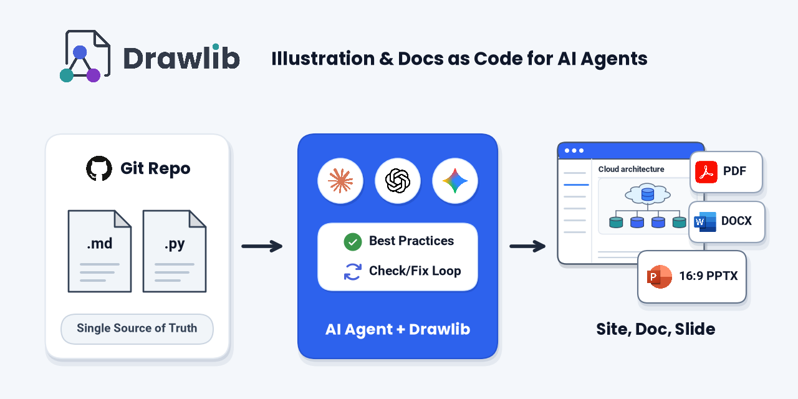

GitHub Social Preview & OGP Banners
Three 1280 × 640 px Open Graph banner variants compiled from standalone Python scripts via drawlib build image examples/images/ogp.


Three 1280 × 640 px Open Graph banner variants compiled from standalone Python scripts via drawlib build image examples/images/ogp.
